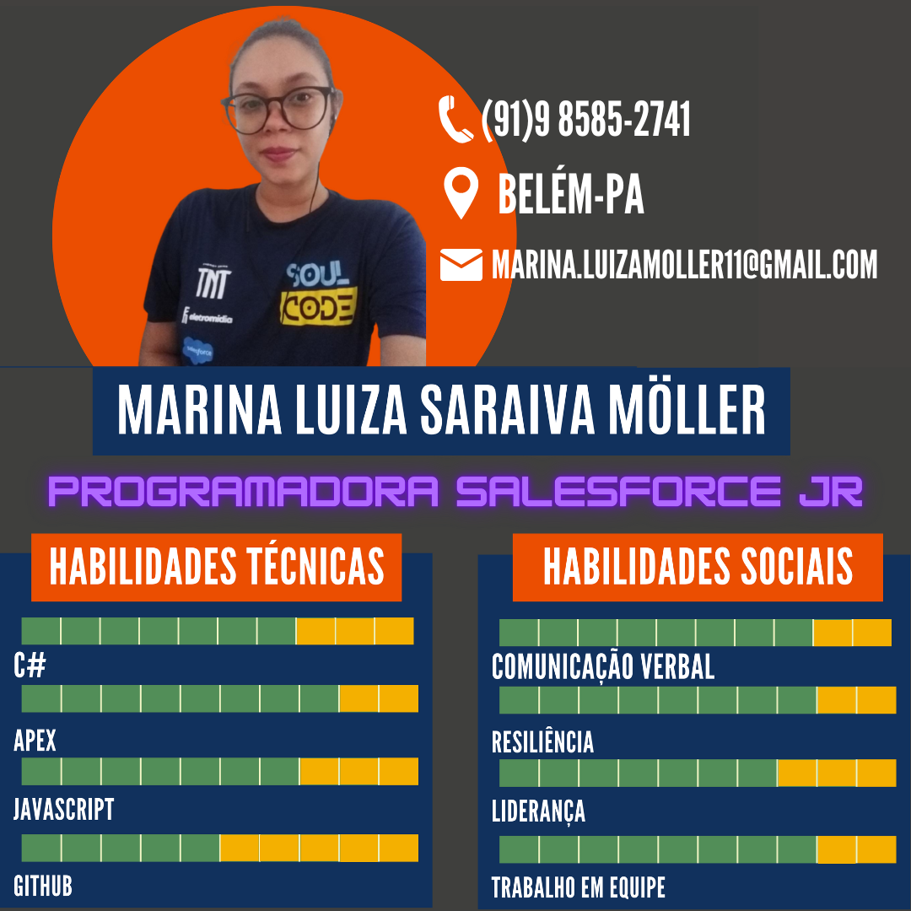

Projetos
API Escola - C#, .NET, SQL, AZURE
Desenvolvimento de uma web API para gerenciar os alunos de uma instituição de ensino.
API Menu - C#, .NET, SQL, AZURE, XUnit
Desenvolvimento de uma web API para gerenciar os itens de um Menu virtual com regras de negócio pré definidas.
Formação
Desenvolvimento Backend
2022 - Blue EdTech: Bootcamp especializado na formação de Desenvolvedores Backend utilizando as tecnologias C# e .Net.
Salesforce
2022 - Soulcode Academy: Bootcamp especializado na formação de Desenvolvedores Salesforce Jr.
Farmácia
2014/2019 - FIBRA Faculdade integrada Brasil Amazônia: Bolsa de 100% conquistada com a nota do ENEM.
Experiências Profissionais
Farmacêutica | Responsável Técnica
2021 - Pró Saúde: Gerenciamento de equipes e produção. Acompanhamento das atividades da área farmacêutica, na composição e fornecimento de medicamentos. Realizar implantação dos processos introduzidos pela gestão de farmácia, implementar instruções de trabalho e monitorar sua efetividade.
Farmacêutica | Residente
2019/2021 - Universidade Federal do Pará: Planejamento de soluções para aprimoramento do sistema computacional junto à equipe. Participação ativa nas atividades de planejamento, aquisição, armazenamento, distribuição e controle dos medicamentos e produtos para saúde.